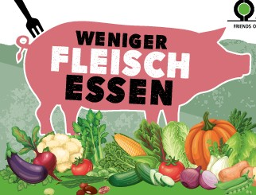

Weniger Fleisch essen
Essen Sie lieber wenig Fleisch in guter Qualität statt viel und schlecht
Mehr lesenRegionale Produkte kaufen

Kaufen Sie regional statt international und unterstützen Sie lokale Bauern
Mehr lesenWeniger Lebensmittel wegwerfen

Achten Sie beim Kauf von Lebensmittel auf die richtige Menge
Mehr lesenWeniger Wasser verbrauchen

Stellen Sie das Wasser ab,während Sie sich einseifen oder die Zähne putzen
Mehr lesen